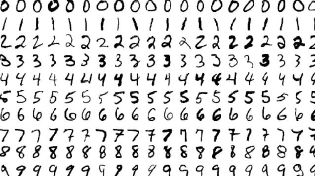
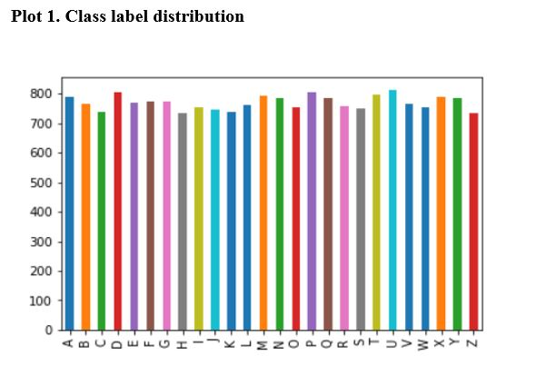
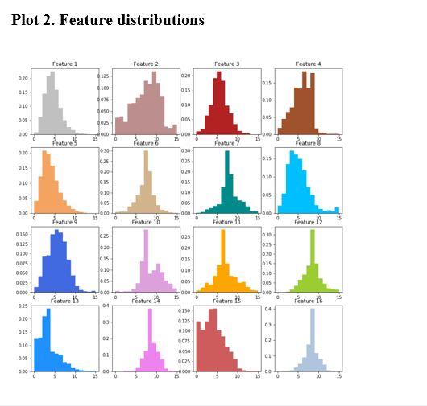
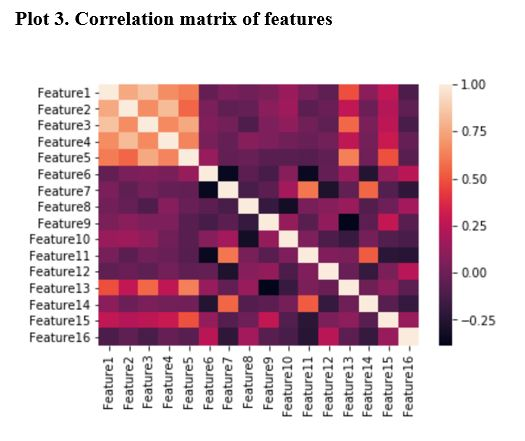
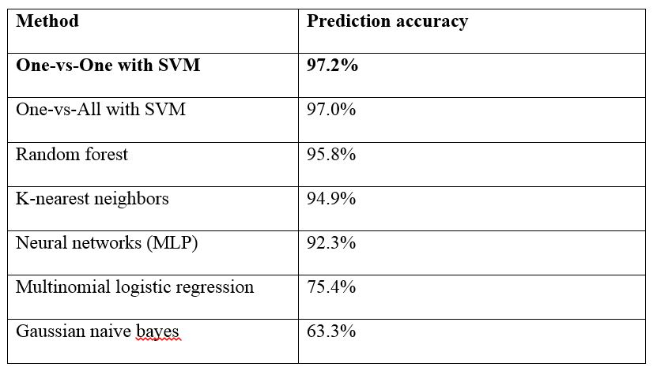

Comparison of different methods for multiclass classification problems

The project is divided into three sections. Section 1 discusses the One-vs-All and One-vs-One method which
are techniques to transform a multiclass classification problem into multiple binary classification problems.
Section 2 outlines the multinomial logistic regression and discusses why it is not sufficient in many cases.
Section 3 applies different multiclass classification methods to the Letter Image Recognition dataset,
and compares the model performance as well as provides some insights on each method.
Programming in this project are done using Python’s scikit-learn library.
Transform a multiclass classification problem into multiple binary classification problems
One-vs-All method
- Training a single binary classifier for each class by treating training samples in that class as
the positive samples and training samples not in that class as negative samples
- Usually has problems when the training data has an unbalanced or skewed class label distribution.
Can be solved by applying common techniques of balancing the training data such as over-sample
the minority class or under-sample the majority class.
One-vs-One method
- Also called the All-Pairs or All-vs-All method
- Usually much less sensitive to the problem of unbalanced class distribution as each binary
classifier is built only on a pair of classes.
Extend binary classification techniques to multiclass classification problems
Statistical Method - Multinomial logistic regression
- Use one of the K classes as the base or reference class and set up K-1 independent binary logistic
regression models by comparing each of the K-1 classes against the reference class.
- Allowing both prediction and inference to be made easily, which is important for almost all
statistical methods.
- Linear classifier (linear decision boundary for the classification). Inputs into the model are
assumed to be linearly separable and the predicted value is a linear function of the inputs
(here, the predicted log-odds is a linear model of the inputs)
Machine Learning Algorithms - Non-linear classifiers
- k-nearest neighbors (KNN)
- naive bayes
- decision trees (random forest)
- neural networks (multilayer perceptron (MLP))
- support vector machines (SVM)
Letter Image Recognition dataset
The data contains 20000 rectangular pixel images where each image (observation) is classified as one of
the 26 capital letters (therefore this is a 26-class classification problem) in the English alphabet.
In this data, each observation has 16 attributes or features, where each feature is either a statistical
moment or edge counts that has already been scaled into a range of integer values from 0 to 15.

Exploratory Data Analysis (EDA)
- Class label distribution
- Feature distributions
- Correlation of features
- Data Characteristics



Summary of model performance for all multiclass classification techniques
- The following table summarizes the predictive power of each model used in the data analysis
(from most predictive to least predictive).
- In conclusion, for this Letter Image Recognition dataset, the best model (in terms of predictive
power) is the One-vs-One method with SVM classifier.

Last updated on Jan 1, 2019